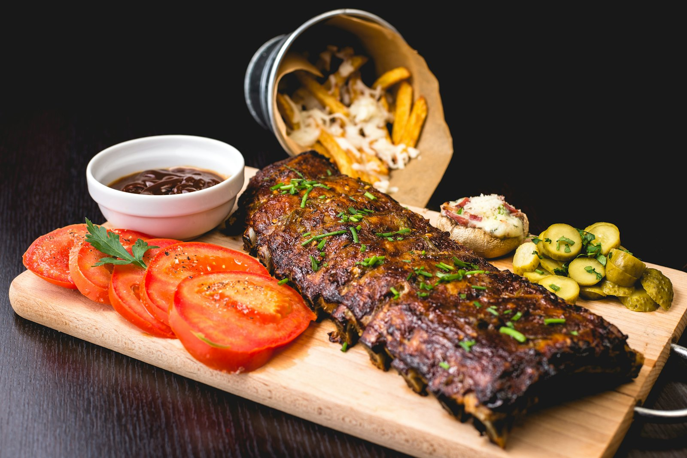

Roerkade 13 · Roermond
Delen, borrelen en blijven hangen aan de Roer.
Café De Kade is bar & kitchen in één: kleine gerechten om te delen, burgers en klassiekers, cocktails en speciaalbier. En als het weer meezit: het terras aan het water.
Ma, wo, do vanaf 14:00 · vr t/m zo vanaf 12:00
Een gezellig eetcafé, tot in de late uurtjes
Aan de Roerkade schuif je aan voor een borrel, een hapje om te delen of een volle maaltijd. Overdag en 's avonds is het eetcafé, later op de avond wordt het de kroeg waar Roermond uitgaat.
- DelenSharing, borrelhappen en het Kade plateau
- DrinkenCocktails, speciaalbieren, gin-tonics
- TerrasDirect aan de Roer, vrij in te lopen
- Laat openVrijdag en zaterdag tot 02:00


De kaart
Van een bakje bitterballen bij het eerste drankje tot spareribs of een burger als avondeten.
Ideaal om te delen
F*ck*n Kade Plateau 32,50
Flammkuchen, chickentortilla, scampi's, saté, spareribs, frietjes met mayo.

Prijzen in euro's. Gerechten en prijzen kunnen wisselen; vraag gerust naar de kaart van vandaag.
Drinken
Een vaasje van de tap, een Brugse Zot of een Pornstar martini: de bar is net zo belangrijk als de keuken.
Mocktails
Homemade lemonades
Aperitief
Gin-tonic
Van de tap
- Fluitje3,25
- Vaasje4,00
- Halve liter8,00
- Grolsch weizen 0,3 l4,50
- Grolsch weizen 0,5 l8,00
- Grimbergen blond5,75
- Grimbergen blanche5,75
- Ondersteboven
- Hangende Harry (IPA)6,00
Wit / blond
- Grolsch zomerzon6,00
- Paulaner 0,5 l8,00
- 't IJwit6,50
- Vedett white4,75
- Duvel6,50
- Brugse Zot6,50
Dubbel / tripel
- Grimbergen dubbel5,50
- Grimbergen tripel5,75
- Chimay tripel6,50
- Karmeliet tripel6,50
IPA
- BrewDog Elvis Juice5,75
Fruitig
- Desperados5,50
- Liefmans5,00
- Grolsch Radler4,00
Speciaal pilsener
- Peroni4,50
- Vedett extra4,75
Alcoholvrij 0,0%
- Grolsch 0,0%4,00
- Grolsch Radler 0,0%4,00
- Grolsch weizen 0,0%5,50
Wit glas / fles
- Brana Vieja viura & chardonnay5,00 / 22,50
- Epicuro pinot grigio6,00 / 27,50
Rosé
- Laurent Miquel syrah & cinsault5,00 / 22,50
Rood
- Brana Vieja tempranillo5,00 / 22,50
Bubbels
- Clos Amador semi sec xarel·lo, macabeo en parellada6,50 / 30,00
- Moët Ice99,00

Fris alles 3,15
- Cola
- Cola zero
- Chaudfontaine blauw
- Chaudfontaine rood
- Ice tea
- Ice tea green
- Fanta
- Cassis
- Sprite
- Tonic
- Bitter lemon
- Ginger ale
- Ginger beer
- Appelsap
- Sinaasappelsap
- Chocomel
Koffie
- Koffie3,00
- Espresso3,00
- Dubbele espresso4,50
- Cappuccino3,25
- Latte macchiato3,50
- Espresso macchiato3,50
- Iced macchiato3,75
- Vanille, karamel of hazelnoot siroop?+0,50
Thee
- Thee3,00
- Verse gemberthee3,50
- Verse muntthee3,50
Speciale koffie
- Irish, French, Italian of Spanish8,25


Met een groep?
Verjaardag, bedrijfsuitje of gewoon met de hele vriendengroep: De Kade heeft groepsarrangementen. Er zijn twee horecagelegenheden die je kunt combineren, dus de ruimte groeit mee met je gezelschap.
Laat weten wanneer en met hoeveel je komt, dan denken we mee.
Open & route
| Maandag | 14:00 – 00:00 |
|---|---|
| Dinsdag | gesloten |
| Woensdag | 14:00 – 00:00 |
| Donderdag | 14:00 – 00:00 |
| Vrijdag | 12:00 – 02:00 |
| Zaterdag | 12:00 – 02:00 |
| Zondag | 12:00 – 00:00 |
Reserveren
Reserveren kan alleen telefonisch: 0475 63 53 66. Het terras is niet te reserveren, daar geldt: wie er is, heeft een plekje.